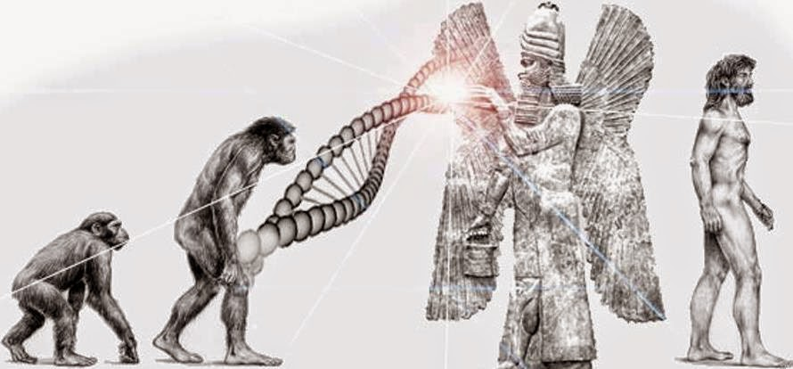

Anunnakis
Historias sobre el origen de la Humanidad hay muchas y van cambiando de cultura en cultura. Sin embargo, entre todos los relatos, hay ciertas características que se repiten como el mito de un primer hombre y una primera mujer, la crónica de un diluvio universal, etc. De todas ellas, hay una sumamente cautivante: La de origen sumerio. Instalados en la confluencia de los ríos Tigris y Éufrates, en la zona de Mesopotamia (actual Irak), este pueblo, de origen desconocido, adoraba a unos dioses que procedían de las estrellas, los Anunnaki.
Su nombre significa, “Los que del Cielo a la Tierra descendieron” y todo lo que sabemos en cuanto a ellos se lo debemos al fallecido investigador Zecharia Sitchin, quien tradujo tablillas de arcilla de los sumerios y descubrió una historia cautivante. Si bien sus detractores alegan que lo narrado en dichas tablillas sólo son mitos, Sitchin siempre creyó que lo contado realmente ocurrió. Allí se habla de seres que llegaron a la Tierra hace muchos miles de años desde un planeta llamado “Nibiru” (mejor conocido como “Planeta X” o también “Hercólobus”), el cual se aproxima a esta parte del Sistema Solar cada 3600 años.
Galería de fotos
Evolución y sustracción de rasgos
